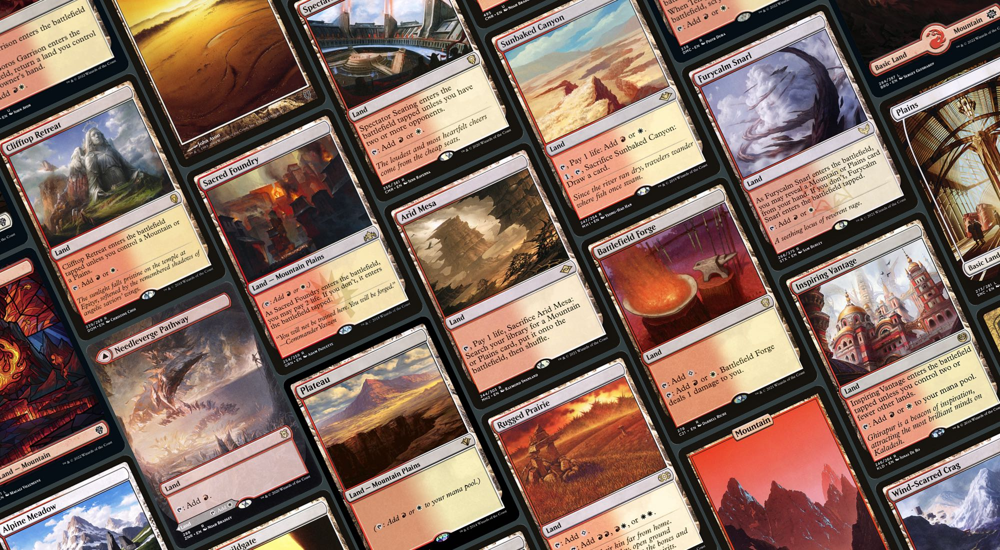

State of Interactions 2022 — White
A comprehensive state of white interactions for EDH
Welcome to our comprehensive guide on White removal spells in Magic: The Gathering.
White is renowned for its ability to neutralize threats through targeted removal and maintain control of the battlefield with mass removal spells.
In this post, we will explore the different strategies that can be deployed to effectively remove your opponent's creatures and permanents using White spells and interactions.
Let's dive in and discover the full potential of White interactions in Magic: The Gathering!
Target Removal
- Path to Exile
- Swords to Plowshares
- Dispatch
- March of Otherworldly Light
- Fragmentize
- Fateful Absence
- Winds of Abandon
- Soul Partition
- Unexpectedly Absent
- Calamity's Wake
- Generous Gift
Mass Removal
Stax
Protection
- Orim's Chant
- Silence
- Abeyance